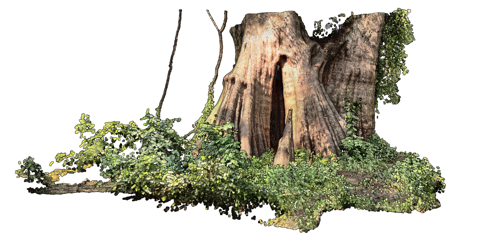
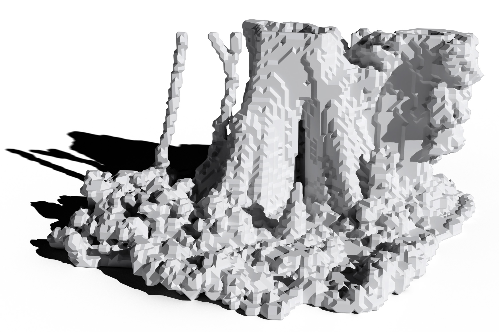
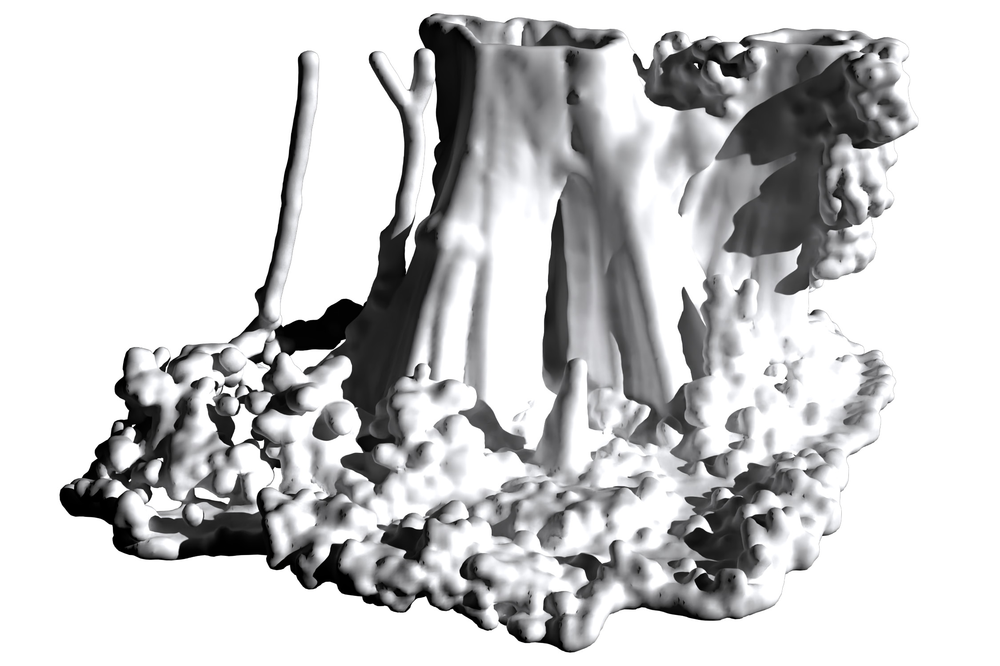
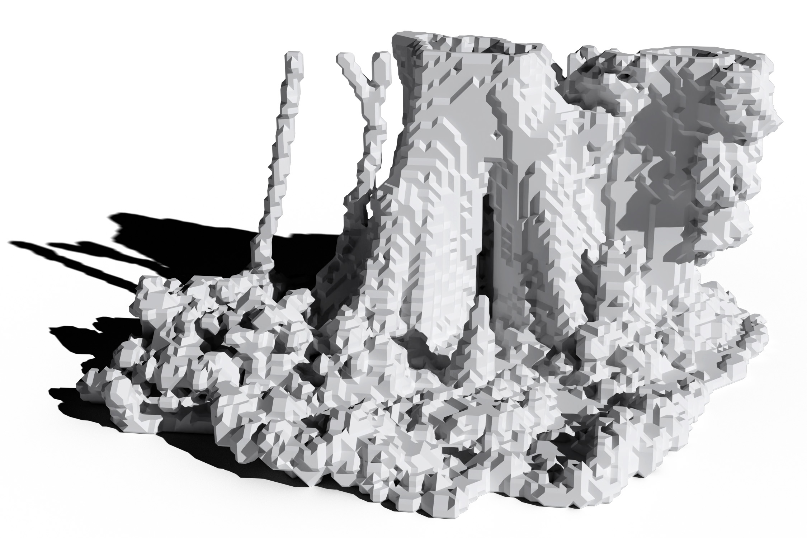
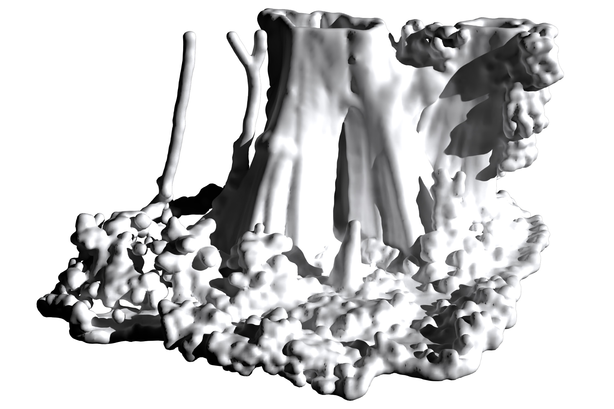

Computational Ecology
for Landscape Architects
Brendan Harmon

Design Research
- Ecological Robotics
- Computational Ecology
- Historic Preservation
- Point Cloud Modeling
Ecological Robotics
Construction Robotics
Drone Data Analytics
Atlas of Heritage Trees

 



Heritage Preservation


Rosedown
Le Petit Versailles
African American Burial Grounds
Point Cloud Modeling
Future Research
-
Project: field robotics
-
Paper: computational aesthetics
-
Book: computational ecology
-
GIS plugins: earthworks and mass flows of water and sediment
-
Grasshopper plugins: lidar & geospatial analytics